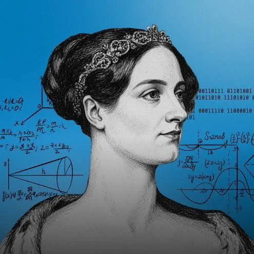

Происхождение

Авгу́ста А́да Кинг (урождённая Ба́йрон), графиня Ла́влейс (англ. Augusta Ada King Byron, Countess of Lovelace; более известная как Ада Лавлейс; 10 декабря 1815, Лондон, Англия, Британская империя — 27 ноября 1852, Марилебон, Лондон, Англия, Британская империя) — английский математик. Известна прежде всего созданием описания вычислительной машины, проект которой был разработан Чарльзом Бэббиджем. Составила первую в мире программу (для этой машины). Ввела в употребление термины «цикл» и «рабочая ячейка», считается первым программистом в истории
Заголовок на двух языках
Ада получила математическое образование, так как её мать боялась, что она начнёт заниматься поэзией, как её отец. Миссис Байрон никогда не была близка с дочерью. Её часто оставляли на попечение бабушке, Джудит Милбенк, которая очень любила ребёнка. Однако из-за того, что в то время действовали социальные установки о том, что ребёнка должен был воспитывать отец и лишь благополучие ребёнка с матерью действовало как «смягчающее обстоятельство», Анна Изабелла была вынуждена представлять себя любящей матерью для остального общества. В частности она писала своей матери тревожные письма, интересуясь состоянием дочери, в каждом из которых заявляла о необходимости сохранить письмо, поскольку его можно было использовать как доказательство материнской заботы. В одном из своих писем она писала о дочери без имени, называя Аду «она»: «Я говорю с ней для Вашего удовольствия, а не для себя, и буду очень рада, если Вы позаботитесь о ней полностью сами». Помимо этого леди Байрон заставляла своих друзей следить за девочкой-подростком на предмет любых признаков «морального отклонения». Сама Ада окрестила наблюдательниц «Фуриями» и жаловалась, что они излишне преувеличивают и придумывают небылицы о ней.
At age 18, Lovelace's mathematical talents led her to a long working relationship and friendship with fellow British mathematician Charles Babbage. She was particularly interested in Babbage's work on the analytical engine. Lovelace first met him on 5 June 1833, when she and her mother attended one of Charles Babbage's Saturday night soirées with their mutual friend, and Lovelace's private tutor, Mary Somerville. Though Babbage's analytical engine was never constructed and did not influence the invention of electronic computers, it has been recognised as a Turing-complete general-purpose computer, which anticipated the essential features of a modern electronic computer. Babbage is therefore known as the "father of computers," and Lovelace is credited with several computing "firsts" for her collaboration with him. Lovelace translated an article by the military engineer Luigi Menabrea about the analytical engine, supplementing it with seven long explanatory notes. These described a method of using the machine to calculate Bernoulli numbers which is often called the first published computer program.
Когда я вижу ученых и так называемых философов, движимых эгоизмом и склонных восставать против обстоятельств и Провидения, я говорю себе: они не истинные священники, они лишь полупророки — если не вовсе лжепророки. Они читали великую книгу бытия лишь физическим взором, не вкладывая в это духа. Интеллектуальное, нравственное и религиозное начала представляются мне естественным образом связанными и переплетенными в единое, гармоничное целое... Что Бог един и что все творения и чувства, вызванные Им к жизни, — ЕДИНЫ; такова истина (истина библейская, священная), которая, на мой взгляд, не осознается большинством людей во всей своей глубине и неисчерпаемости. Слишком сильна склонность рассматривать физические и нравственные явления мироздания как нечто разрозненное и обособленное, тогда как на самом деле всё сущее естественным образом взаимосвязано. Я мог бы написать вам целый том на эту тему.
Из письма к Эндрю Кроссу; цитируется по изданию: Eugen Kölbing, *Englische Studien*, Vol. 19 (1894), Leipzig: O.R. Reisland, «Byron's Daughter», p. 158. Источник